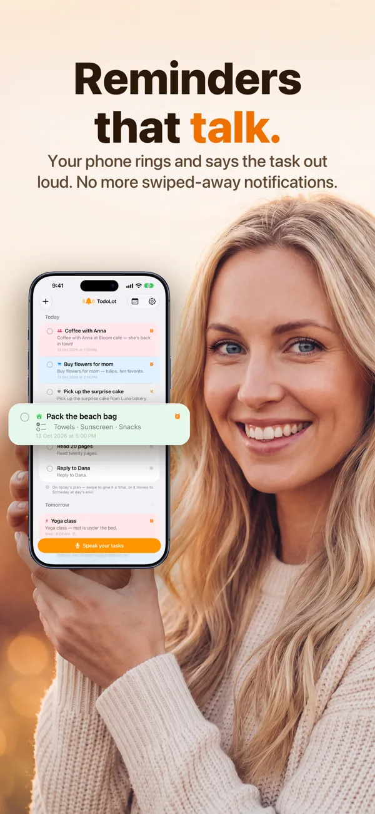
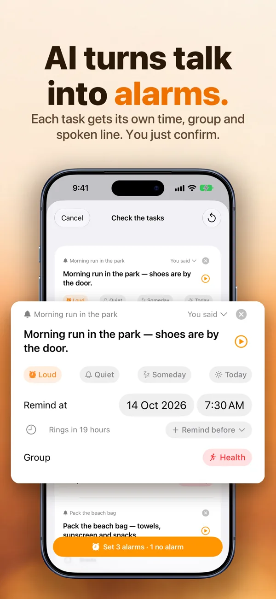
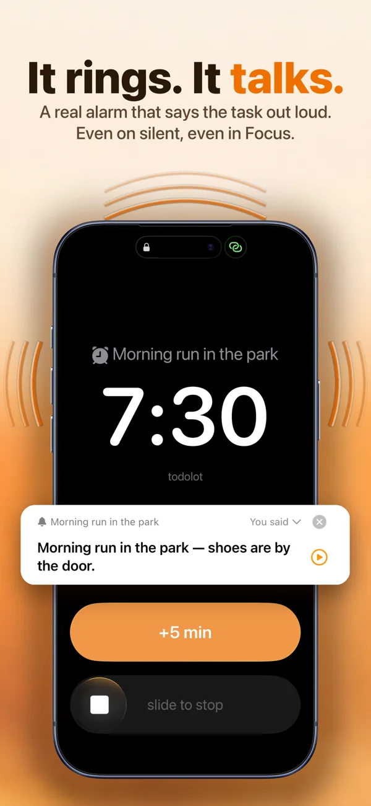
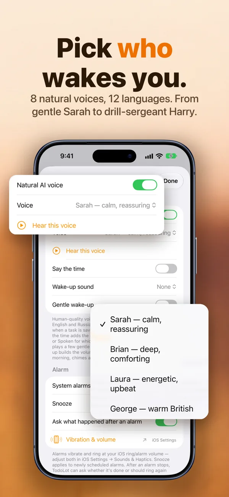

Forgot to call back. Forgot the parcel. Forgot the one thing you promised to do today. It’s not that you don’t care: quiet reminders are just easy to swipe away.
TodoLot is a voice to-do list for iPhone for brains that lose tasks the moment you think “I’ll remember that”. Say your tasks once. At the right time your phone rings like a real alarm and says the task out loud, even on silent, even in Focus.
Download on the App Store Free to start · iPhone, iOS 26.5 or later · No account needed
A banner is easy to dismiss without reading. TodoLot rings like a real alarm and says the task, so you know what it is before your thumb moves.
Alarms named “Alarm 3” tell you nothing. TodoLot’s alarm speaks the task itself: “Morning run in the park, shoes are by the door.”
Capturing a task takes seconds of talking. Say everything at once; AI splits it into tasks with times before it slips away.
Missed appointments, late fees, the parcel sent back. Say “dentist on the 12th, remind me a day before” and it rings a day early.




TodoLot uses the iOS system alarm framework, the same kind the Clock app uses. Alarms break through Silent mode and Focus.
You know what to do before you even look at the screen. Pick a natural human voice or use the built-in system voice.
Talking is faster than typing. One dictation can become ten tasks, each with its own time and group.
Built for busy, forgetful brains. If tasks evaporate the moment you think “I’ll remember that”, if your reminders pile up ignored, if sticky notes and alarms named “Alarm 7:30” have failed you, this is your app. Many people with ADHD find a loud, talking alarm easier to act on than a silent banner. TodoLot is a convenience tool, not a medical device.
| Free | TodoLot Pro | |
|---|---|---|
| Voice captures | 3 a day | Unlimited |
| Manual tasks and alarms | Unlimited | Unlimited |
| Alarm voice | System voice | Natural human voices |
| Custom wake-up sound | — | Yes |
| Price | $0 | $12.99/week or $149.99/year, 3-day free trial |
Prices in USD and may vary by region; the exact price is shown in the app before purchase. Billing is handled by Apple. Manage or cancel in iOS Settings → your name → Subscriptions. Terms of Use.
Yes. Alarms are real iOS system alarms, so they ring at full volume on silent and in Focus modes. Quiet tasks, which you mark on purpose, arrive as normal notifications instead.
iPhone with iOS 26.5 or later. On iPad the app runs as an iPhone-designed app.
Any language that iOS speech recognition supports on your device. You pick the dictation language on the recording screen. Natural voices are tuned for English and eleven other languages listed above.
Tasks you add by hand and all scheduled alarms work without a connection. Turning a dictation into tasks and generating a natural voice need the internet; if the network is down, the alarm falls back to the built-in system voice so it always rings.
Your tasks live only on your device. There is no account and no advertising. Only the text of a dictation and, with natural voices on, the text of an alarm phrase leave the app. Full details: Privacy Policy.
It is built for forgetful brains in general: tasks that evaporate the moment you think “I’ll remember that”, reminders that pile up ignored. Many people with ADHD find a loud, talking alarm easier to act on than a silent banner. TodoLot is a convenience tool, not a medical device.
More answers on the Support page.